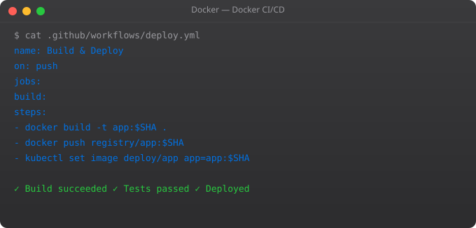

Kubernetes is the dominant container orchestration platform, and we cover it extensively in our Kubernetes series. But for smaller teams and simpler deployments, Docker Swarm deserves serious consideration. It is built into Docker, requires zero additional tools to install, and can be set up in minutes. If your needs fit within what Swarm offers, it can be significantly easier to operate than Kubernetes.
# On the manager node
docker swarm init --advertise-addr MANAGER_IP
# This outputs a join token. Run it on worker nodes:
docker swarm join --token SWMTKN-1-xxx MANAGER_IP:2377
# On manager: verify nodes joined
docker node ls# Deploy a service with 3 replicas
docker service create --name web --replicas 3 --publish published=80,target=80 nginx:1.25
# List services
docker service ls
# See which nodes are running each replica
docker service ps web
# Scale to 5 replicas
docker service scale web=5
# Rolling update to new version
docker service update --image nginx:1.27 web
# Rollback if something went wrong
docker service rollback web# docker-stack.yml
version: '3.8'
services:
web:
image: my-web-app:latest
deploy:
replicas: 3
update_config:
parallelism: 1
delay: 10s
restart_policy:
condition: on-failure
ports:
- "80:3000"
db:
image: postgres:15
deploy:
replicas: 1
placement:
constraints:
- node.role == manager
volumes:
- db-data:/var/lib/postgresql/data
volumes:
db-data:docker stack deploy -c docker-stack.yml my-app
docker stack services my-app
docker stack ps my-appIn Part 12, we build a complete real-world Docker project — a full-stack application with database, cache, reverse proxy, CI/CD pipeline, and production deployment. Everything from this series applied together.
# Create a secret from stdin
echo "supersecretpassword" | docker secret create db_password -
# Create from file
docker secret create ssl_cert ./cert.pem
# List secrets
docker secret ls
# Use secret in a service
docker service create \
--name myapp \
--secret db_password \
--env DB_PASSWORD_FILE=/run/secrets/db_password \
myapp:latest
# Inside the container: cat /run/secrets/db_password# View all nodes and their status
docker node ls
# Inspect a specific node
docker node inspect node-id
# View resource usage across nodes
docker node ps $(docker node ls -q)
# Drain a node for maintenance (moves containers to other nodes)
docker node update --availability drain worker-1
# Bring node back
docker node update --availability active worker-1
# View all tasks (running containers) across cluster
docker service ps --filter "desired-state=running" my-serviceI have used both in production, and the choice depends entirely on team size, complexity, and operational capacity.
Choose Docker Swarm when: you have a small team (1-5 engineers), a simple application (under 20 services), and limited DevOps expertise. Swarm is built into Docker, requires no additional tools, and can be set up in an afternoon. The operational burden is low.
Choose Kubernetes when: you have more than 5 services, need fine-grained autoscaling, have a dedicated platform team, or need the extensive ecosystem of Kubernetes tools (Helm, ArgoCD, Istio, etc.). Kubernetes has a steep learning curve but offers capabilities that Swarm simply does not have.
Many successful companies run production workloads on Docker Swarm. Do not let the Kubernetes hype push you into unnecessary complexity for a use case that Swarm handles perfectly well.
Docker Swarm is Docker's built-in orchestration mode that lets you manage a cluster of Docker hosts as a single virtual host. You deploy services rather than individual containers, and Swarm automatically distributes them across nodes, handles load balancing, restarts failed containers, and supports rolling updates.
Use Docker Swarm when you need a simpler orchestration solution — easier to set up, manage, and debug. Swarm is part of Docker, requires no extra tools, and handles most production needs for small to medium deployments. Use Kubernetes when you need advanced scheduling, extensive ecosystem integrations, fine-grained RBAC, or are already running at massive scale.
On your manager node, run docker swarm init. This outputs a join token. On each worker node, run docker swarm join --token TOKEN MANAGER_IP:2377. The worker joins the cluster and starts receiving workloads. You can have multiple manager nodes for high availability using docker swarm join-token manager.
A Docker service is the Swarm equivalent of a docker run command for a cluster. You define the desired state: which image to run, how many replicas, which ports to publish, which networks to connect to. Swarm's scheduler distributes replicas across available nodes and maintains the desired count automatically.
Use docker service update --image new-image:tag service-name. Swarm replaces replicas one at a time (or in configurable batches), waiting for each new replica to be healthy before proceeding. If the update fails, Swarm can automatically rollback. Configure parallelism and delay with --update-parallelism and --update-delay flags.